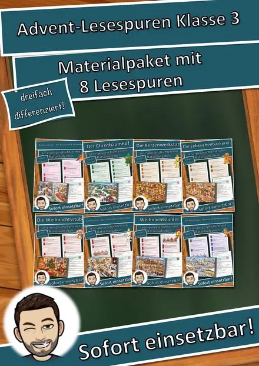
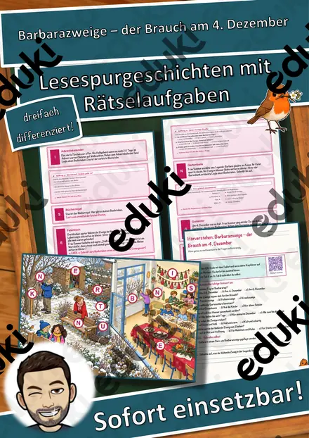
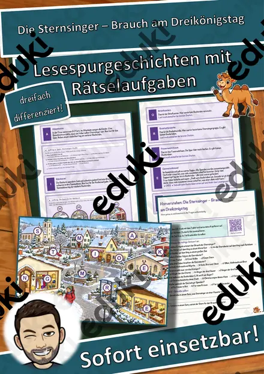
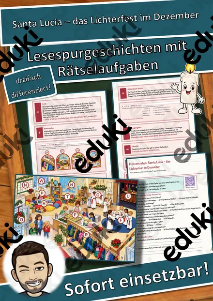
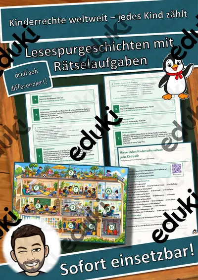
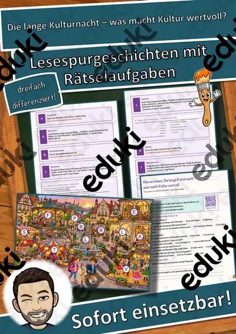
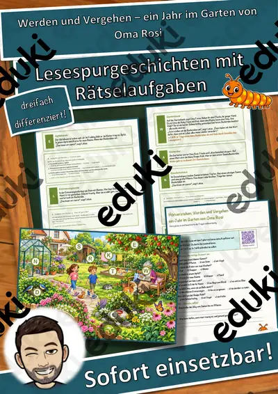
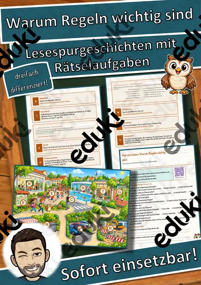

Streit schlichten – wir finden eine Lösung – Lesespurgeschichte mit Rätselaufgaben (Klasse 3)
Streit schlichten – wir finden eine Lösung – Lesespurgeschichte Sachunterricht (Klasse 3)Schick deine Klasse auf eine spannende Lesespur über den Schulhof! Emil und Malik aus der 3a streiten sich in der großen Pause um den Ball – die Streitschlichter Hanna und Ben aus der 4b helfen ihnen, Maskottchen ist die kleine Taube Paula. Vom Fußballfeld über Tischtennisplatte, Aufsichtsbank, Pavillon, Gartenbank, Trinkbrunnen, Kastanienbaum, Hinkelfeld und Pausenhalle bis zur Torwand lernen die Kinder die Stopp-Regel, die Regeln und Schritte einer Streitschlichtung und Ich-Botschaften kennen. Am Ende jedes Abschnitts verrät ein Hinweis den nächsten Ort auf dem Plan – nur wer genau liest, findet den Weg und sammelt alle geheimen Buchstaben zum Lösungswort.
Die passende Lesespur für Sachunterricht, Ethik und Religion in Klasse 3 (auch 2 und 4) – ideal für Klassenrat, soziales Lernen, Streitschlichter-Projekte oder Vertretungsstunden. Geeignet für die Grundschule in allen Bundesländern. Das Material ist SOFORT EINSETZBAR und in DREI DIFFERENZIERUNGSSTUFEN (leicht ★ / mittel ★★ / schwer ★★★) angelegt.WICHTIG: Das komplette Material ist sowohl in FARBE als auch in SCHWARZ-WEISS enthalten – ideal zum Sparen von Druckkosten.DAS IST ENTHALTEN
- Lesespurgeschichte in 3 Niveaus (leicht, mittel, schwer)
- farbiger Plan des Schulhofs als Suchkarte
- Hörverstehen mit QR-Code zur MP3 (selbstständiges Hören mit Kopfhörern)
- vier Aufträge auf dem Weg: eine Zuordnung der Schlichtungsregeln, eine Rechenaufgabe zur Pausenzeit, ein Quiz und ein Steckbrief
- Rätselseite (Wörter-Suchsel + Rätselfragen rund ums Streitschlichten)
- Ausmalbild zum Thema
- ausführliches Lösungsblatt für die Lehrkraft mit allen Lösungen (Lesespur, Aufträge, Hörverstehen, Rätselseite)
- alles zusätzlich als komplette Schwarz-Weiß-VarianteSO GEHT DIE LESESPURDie Schülerinnen und Schüler lesen ab START, finden im Text den nächsten Ort, suchen ihn auf dem Plan und lesen bei dieser Station weiter. An jeder richtigen Station gibt es einen Buchstaben. Eingeplante Sackgassen (Sandkasten, Fahrradständer, Mülleimer, Klettergerüst) sind keine Stationen und dienen der Selbstkontrolle. Am Ende werden die gesammelten Buchstaben umgestellt und ergeben ein geheimes Lösungswort. (Die Lösungen sind selbstverständlich nur im Lösungsblatt für die Lehrkraft enthalten.)INHALTLICHER SCHWERPUNKTStopp-Regel, Hilfe holen bei Gewalt, Aufgabe von Streitschlichtern (helfen statt entscheiden, freiwillig), Regeln beim Schlichten (ausreden lassen, nicht beleidigen, ehrlich sein, alles bleibt unter uns), nacheinander erzählen, Ich-Botschaften statt Vorwürfen, sich in den anderen hineinversetzen, Lösungen sammeln, bei denen beide nachgeben, Vereinbarung unterschreiben.ABGEDECKTER LEHRPLAN (Klasse 3)
- Sachunterricht / Ethik (Klasse 3) – eine Streitkultur entwickeln und erproben (Streitschlichter), Regeln für das Zusammenleben in der Schule.
- Mathematik – Minus und Mal mit Zeitspannen (Minuten).
- Deutsch – Texte sinnentnehmend lesen, Gefühle in Ich-Botschaften ausdrücken; einem Hörtext gezielt Informationen entnehmen (Hörverstehen mit MP3).Geeignet für Freiarbeit, Stationenlernen, Vertretungsstunden, Wochenplan und als Einstieg ins Thema.
Ähnliche Materialien

Materialpaket Advent und Weihnachten für die 3. Klasse: 8 Lesespurgeschichten mit Rätselaufgaben (Barbarazweige, Lebkuchen, Santa Lucia, Sternsinger & mehr)

Barbarazweige – der Brauch am 4. Dezember – Lesespurgeschichte mit Rätselaufgaben (Klasse 3)

Die Sternsinger – Brauch am Dreikönigstag – Lesespurgeschichte mit Rätselaufgaben (Klasse 3)

Santa Lucia – das Lichterfest im Dezember – Lesespurgeschichte mit Rätselaufgaben (Klasse 3)

Kinderrechte weltweit – jedes Kind zählt – Lesespurgeschichte mit Rätselaufgaben (Klasse 3)

Die lange Kulturnacht – was macht Kultur wertvoll? – Lesespurgeschichte mit Rätselaufgaben (Klasse 3)

Werden und Vergehen – ein Jahr im Garten von Oma Rosi – Lesespurgeschichte mit Rätselaufgaben (Klasse 3)
